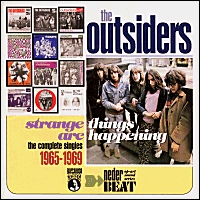

Welcome to the
Outsiders' Touch
Home Page
Wally Tax, Ronny Splinter, Appie
Rammers, Tom Krabbendam, Leendert Busch, Frank Beek. Ladies and Gentlemen from
Amsterdam, Holland .....THE OUTSIDERS!!!
I don't know one single fan of sixties
garage / beat music who doesn't love the Outsiders. But despite being one of
the best bands of their period and huge national following, they never achieved
the international success they deserved and their records are very hard to
find. This page is dedicated to all those people who love them but can't find
any information about this incredible band.
|
|
|
NEWS
|
10 April 2005 - In Memoriam
Today we mourn the untimely loss of Wally Tax (14th February 1948 - 10th April 2005).
Wally: I don't know if you fully realized to what extent your music was and is important to many of us. You will never be forgotten.
|
 7 October 2002
Finally
available! The collection every Outsiders' fan was waiting for: the
complete singles in one single package! Courtesy of
RPM records. |
News Archives
|
|